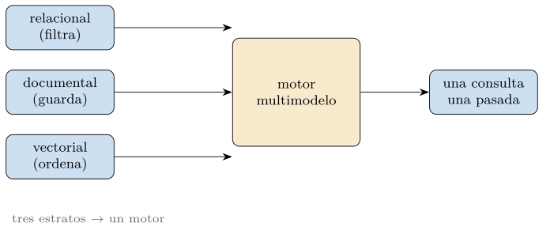
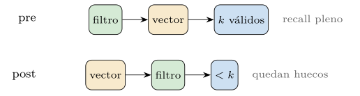
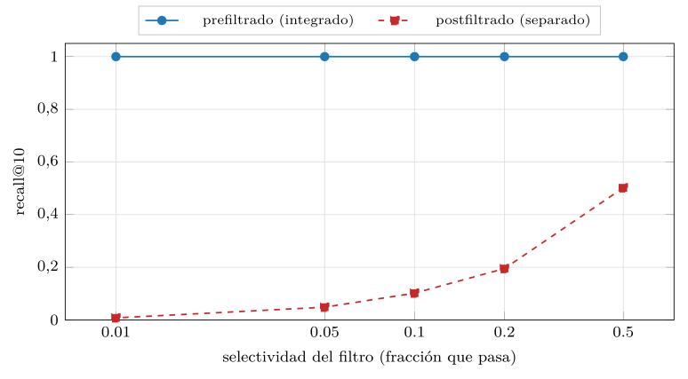
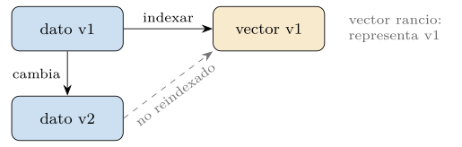
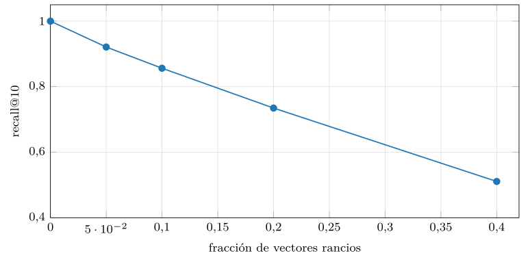
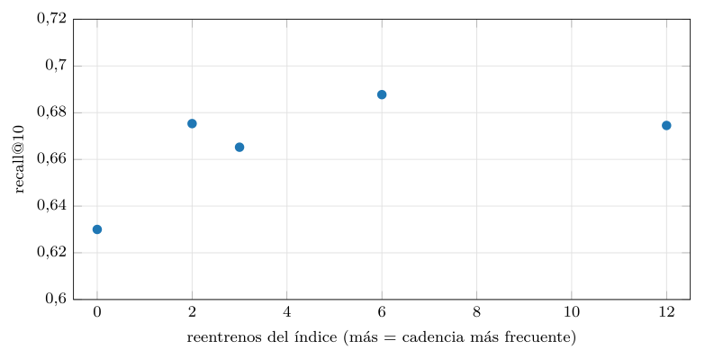

Capítulo 20. El futuro híbrido
El capítulo anterior dejó montada la arquitectura —el RAG, el agente, la memoria— y planteó, al despedirse, una pregunta de fondo: la base vectorial casi nunca actúa sola, convive con un grafo, un modelo, metadatos relacionales; entonces, ¿conviene un motor vectorial aparte, o uno que lo integre todo en un único sistema? Este capítulo, el más prospectivo del libro, examina esa pregunta. Lo hace con una cautela deliberada: no nombrará versiones de producto ni apostará por ganadores, porque el panorama cambia más rápido de lo que un libro impreso puede seguir, y un capítulo lleno de nombres de hoy sería un museo mañana. En su lugar, mide los fenómenos que explican por qué los estratos del libro tienden a converger, y qué cuesta esa convergencia —que es lo que no caduca—.
El hilo del libro ha recorrido tres estratos. El relacional, que filtra con precisión sobre atributos estructurados (primera parte). El documental, que guarda lo semiestructurado y flexibiliza el esquema (segunda parte). Y el vectorial, que ordena por similitud lo que no tiene clave exacta (de la tercera en adelante). El libro los presentó por separado, por claridad pedagógica; pero el capítulo 17 ya mostró que una sola consulta seria los necesita a la vez —filtrar, ordenar, devolver— y el capítulo 19, que un sistema real los compone sin descanso. La pregunta de este capítulo es si esa composición, hoy a menudo repartida entre sistemas distintos que se hablan por la red, tenderá a un único motor multimodelo que resuelva los tres estratos en una sola pasada (figura 20.1).

Anticipemos la tesis, para luego medirla. Hay un argumento técnico fuerte a favor de integrar —la consulta híbrida se resuelve mejor dentro de un motor que entre dos—, una convergencia que ya ocurre desde los dos lados —los motores relacionales añaden vectores, los vectoriales añaden filtros—, y un coste real que la integración no elimina sino que hace explícito —mantener el vector consistente con el dato que representa, y el índice fresco ante los cambios—. El capítulo recorre esos tres puntos, con su medida cada uno, y cierra descendiendo de la prospectiva al caso concreto que el capítulo 21 desarrollará.
La pregunta: ¿un motor o varios?
La pregunta no es nueva; es una recaída de un viejo debate de las bases de datos, y conviene situarla ahí. El capítulo 16 ya distinguió los motores dedicados —construidos solo para vectores, óptimos en lo suyo— de las extensiones —un motor relacional o documental que añade el vector como una capacidad más—. Aquel capítulo lo trató como una decisión de ingeniería del presente; este lo eleva a tendencia de fondo. Y la tensión es la misma que Stonebraker planteó hace dos décadas con su «one size fits all» (Stonebraker y Çetintemel 2005): ¿gana el sistema especializado, que hace una cosa de forma insuperable, o el generalista, que hace muchas de forma suficiente y ahorra al usuario el coste de coserlas?
El argumento del especialista es de rendimiento. Un motor dedicado al vector controla su formato de almacenamiento, su índice, su gestión de memoria y su planificador, y los afina sin las ataduras de servir también tablas y transacciones; en el límite del recall y la latencia, casi siempre gana. El argumento del generalista es de simplicidad operativa, y es más sutil de lo que parece. Un sistema que mantiene el dato y su vector juntos evita al usuario el trabajo —y los errores— de sincronizar dos sistemas: una sola copia de la verdad, una sola transacción, una sola política de respaldo, un solo lugar donde el filtro y la similitud se encuentran. La historia de las bases de datos sugiere que, cuando el generalista alcanza un rendimiento «suficiente», su simplicidad operativa termina por imponerse para la mayoría de los casos, dejando al especialista el extremo exigente. La pregunta de este capítulo es si el vector seguirá ese mismo arco.
Conviene hacer concreta esa «simplicidad operativa», porque en abstracto suena a poco y en la práctica lo es todo. Imagínese el caso separado: un sistema relacional guarda los productos y un motor vectorial guarda sus embeddings. Cuando se da de alta un producto, hay que escribirlo en los dos; cuando se modifica su descripción, hay que actualizar el dato y recalcular y reescribir su vector; cuando se borra, hay que borrarlo de ambos. Cada una de esas operaciones puede fallar a medias —el dato se escribió, el vector no— dejando los dos sistemas desincronizados: productos sin vector que nunca se recuperan, vectores huérfanos que apuntan a productos que ya no existen. Mantener dos sistemas consistentes ante fallos es uno de los problemas más espinosos de la ingeniería de datos, y el motor integrado lo elimina de raíz: una sola escritura, una sola transacción, una sola verdad. Esa es la simplicidad que termina por pesar más que unos puntos de rendimiento.
Para calibrar la prospectiva conviene mirar atrás, porque esta no es la primera convergencia que las bases de datos viven, y las anteriores enseñan el patrón. Cuando el modelo relacional irrumpió (capítulo 1), convivió con modelos previos —jerárquico, de red— que hacían bien lo suyo; no los aniquiló de golpe, pero su combinación de potencia suficiente y simplicidad declarativa desplazó el centro de gravedad hasta volverlos nicho. Décadas después, la explosión NoSQL de la segunda parte fragmentó ese centro: ante la escala web, surgieron motores especializados —clave-valor, documentales, columnares, de grafos— cada uno renunciando a algo del relacional para ganar en su eje. Fue una era de divergencia, de «one size fits all ha muerto».
Pero el péndulo volvió. Los motores documentales añadieron transacciones y consultas ricas; los relacionales añadieron columnas JSON y escalado horizontal; apareció el «NewSQL» que prometía la escala de NoSQL con las garantías del relacional. La divergencia de los 2000 fue seguida por una reconvergencia en la que cada especialista, para servir aplicaciones reales, fue readquiriendo las capacidades del generalista, hasta que la frontera entre «relacional» y «NoSQL» se volvió borrosa. El vector entra en escena en este punto del ciclo, y por eso la tesis de este capítulo es de reconvergencia, no de divergencia: el vector llegó como capacidad especializada —motores dedicados, bibliotecas de índice— y está siendo absorbido por los generalistas a la vez que sus motores dedicados adquieren capacidades de generalista. Si la historia rima, el desenlace será el de siempre: el vector se vuelve una capacidad más de los motores de datos, conservando un nicho dedicado para el extremo exigente. No es una profecía arriesgada; es el patrón observado tres veces.
El argumento de la integración
El argumento técnico a favor de integrar no es retórico: se mide, y es contundente. Tómese la consulta híbrida del capítulo 17 —filtrar por un atributo y, entre lo que pasa el filtro, ordenar por similitud— y véase qué ocurre al resolverla de dos maneras (figura 20.2). La forma integrada prefiltra: busca los vecinos más cercanos solo entre los que pasan el filtro, y devuelve siempre \(k\) resultados válidos. La forma separada —dos sistemas, el vectorial y el relacional, hablándose por la red— postfiltra: el sistema vectorial devuelve sus \(k\) mejores globales y, después, se descartan los que no pasan el filtro.

La diferencia es brutal y crece con la selectividad del filtro (figura 20.3). Cuando el filtro deja pasar a la mitad, el postfiltrado conserva la mitad del recall —malo pero no catastrófico—; pero cuando el filtro es selectivo, que es lo habitual —«documentos de esta colección», «productos de esta categoría en stock»—, el desastre es total: con un filtro que deja pasar el 1 %, el postfiltrado recupera menos del 1 % de lo que debía, porque casi ninguno de los \(k\) vecinos globales pertenece a esa minoría. El prefiltrado, en cambio, mantiene el recall perfecto a cualquier selectividad, porque busca donde debe. La similitud global ignora el filtro; integrarlos hace que la similitud se calcule donde el filtro manda.
Las cifras medidas no dejan lugar a dudas (listado 20.1): mientras el prefiltrado se mantiene en recall 1,0 a toda selectividad, el postfiltrado cae de 0,50 (filtro del 50 %) a 0,008 (filtro del 1 %), en paralelo al factor de sobremuestreo que necesitaría para compensar —de pedir el doble de candidatos a pedir más de cien veces—. Es la misma historia contada por dos medidas: lo que el recall del postfiltrado pierde es exactamente lo que el sobremuestreo tendría que recuperar, a un coste creciente.
selectividad recall_pre recall_post factor_sobremuestreo
0.50 1.00 0.50 2.0
0.20 1.00 0.20 4.8
0.10 1.00 0.10 10.4
0.05 1.00 0.05 21.1
0.01 1.00 0.01 106.0Listado 20.1. Las dos medidas del argumento de la integracion: recall del pre y del postfiltrado, y factor de sobremuestreo, segun la selectividad. El postfiltrado cae donde el sobremuestreo se dispara.

src/cap20_multimodelo.py.El impuesto del sobremuestreo
El sistema separado tiene un remedio parcial, pero caro: sobremuestrear. Si sabe que el filtro deja pasar una fracción \(s\), puede pedir al vector no \(k\) candidatos sino muchos más —del orden de \(k/s\)— con la esperanza de que, tras filtrar, queden los \(k\) válidos. La práctica mide ese multiplicador (figura 20.4): para un filtro del 50 % basta pedir el doble; pero para uno del 1 % hay que pedir del orden de cien veces más, porque hay que rascar muy hondo en la lista de vecinos globales hasta juntar diez que pasen el filtro. Ese sobremuestreo es el impuesto de no integrar: trabajo desperdiciado —calcular y transportar cien candidatos para quedarse con diez—, latencia de los viajes de ida y vuelta entre sistemas, y una garantía que sigue siendo frágil, porque para filtros muy selectivos ni siquiera un sobremuestreo generoso asegura juntar los \(k\).
El remedio del sobremuestreo se programa pidiendo \(k/s\) candidatos en vez de \(k\) y filtrando después (listado 20.2); funciona para filtros poco selectivos, pero para los muy selectivos el factor \(1/s\) lo vuelve prohibitivo, y ni siquiera garantiza juntar los \(k\) —por eso es un parche, no una solución—.
def postfiltrar_con_sobremuestreo(base, q, pasa, k, sel):
sobre = int(k / max(sel, 1e-6)) # pedir k/sel candidatos
top = np.argsort(-(base @ q))[:sobre] # sobremuestrear
validos = [i for i in top if pasa[i]] # filtrar despues
return validos[:k] # puede devolver menos de kListado 20.2. El remedio del postfiltrado: sobremuestrear k/s candidatos y filtrar; un parche que se encarece como 1/s y que para filtros muy selectivos ni siquiera asegura juntar k.

src/cap20_multimodelo.py.La ingeniería del prefiltrado no es gratis
Sería deshonesto presentar el prefiltrado como una victoria sin matices, porque implementarlo bien es uno de los problemas difíciles de los motores vectoriales, y conviene entender por qué. El índice de vecinos aproximados del capítulo 15 —un grafo HNSW, una partición IVF— está construido sobre todos los vectores, y su eficiencia depende de recorrer esa estructura completa. Filtrar antes rompe ese supuesto: si solo el 1 % de los vectores pasa el filtro, el grafo de navegación se queda casi vacío —sus aristas llevan a nodos descartados— y la búsqueda, que dependía de la conectividad, se degrada o se queda sin caminos. El prefiltrado exacto sobre un índice aproximado no es, pues, automático: exige técnicas específicas.
Las hay de varios tipos, y nombrarlas muestra que la integración es un campo de ingeniería activo, no un problema resuelto. Una es el filtrado durante el recorrido: navegar el índice normalmente pero aceptar solo los nodos que pasan el filtro, ampliando la exploración para compensar los descartados —funciona si el filtro no es demasiado selectivo—. Otra es mantener índices por partición: si los filtros frecuentes son conocidos —por categoría, por usuario—, construir un índice separado por valor, de modo que prefiltrar sea elegir el índice correcto; cuesta espacio y solo sirve para los atributos previstos. Otra es el filtrado por fuerza bruta cuando el subconjunto que pasa es pequeño: si tras el filtro quedan mil vectores, compararlos todos es más rápido y exacto que navegar un índice. Un motor maduro elige entre estas estrategias según la selectividad estimada del filtro —otra decisión que su planificador debe tomar, como el relacional elige entre recorrer una tabla o usar un índice—. La lección no es que el prefiltrado sea fácil, sino que es posible dentro de un motor y casi imposible entre dos, y que esa diferencia es la que empuja la integración.
La lección de fondo es la del capítulo 17 llevada a su conclusión arquitectónica: el filtro y la similitud no son dos pasos que se puedan encadenar sin coste, sino una sola operación que conviene resolver junta. Un motor que conoce a la vez el atributo y el vector puede empujar el filtro dentro de la búsqueda —recorrer el índice saltándose lo que no pasa, o mantener índices por partición— y entregar los \(k\) válidos sin sobremuestreo ni viajes. Esa es la ventaja técnica de la integración, y es la que empuja la convergencia desde el lado del rendimiento, no solo desde el de la comodidad.
La convergencia desde los dos lados
Lo notable del momento es que la convergencia no avanza desde un solo frente, sino desde los dos a la vez, y eso es lo que la hace parecer inevitable. Por un lado, los motores relacionales —y los documentales— están añadiendo el vector como un tipo nativo: una columna más, indexable con un índice de vecinos aproximados, consultable con el mismo lenguaje que filtra y ordena el resto. Para ellos el vector no es un sistema aparte sino una capacidad incremental, y su apuesta es justamente la simplicidad operativa de la sección 20.1: quien ya guarda el dato puede guardar su vector al lado, y resolver la consulta híbrida en casa, con prefiltrado, sin un segundo sistema.
Por el otro lado, los motores vectoriales dedicados, que nacieron haciendo solo similitud, están añadiendo lo que les faltaba para no ser meras bibliotecas de índice: filtros sobre metadatos, atributos por vector, lenguajes de consulta, transacciones, control de acceso. Es la convergencia inversa, y confirma la tesis desde el ángulo opuesto: un motor de similitud puro resulta insuficiente para una aplicación real —que siempre quiere filtrar, paginar, controlar quién ve qué— y, al añadir esas capacidades, el especialista se va pareciendo al generalista. Los dos caminos, el del relacional que adopta el vector y el del vectorial que adopta lo relacional, apuntan al mismo destino: un motor donde el vector es un ciudadano de primera clase junto a el dato estructurado, no en un anexo (Pan et al. 2024).
Conviene, eso sí, la cautela prometida. Que la convergencia ocurra desde los dos lados no significa que un único motor vaya a barrer a los demás, ni que el especialista desaparezca. La historia de las bases de datos —relacionales, documentales, columnares, de grafos— es de coexistencia, no de extinción: cada generalista que «se lo come todo» deja siempre un extremo exigente donde el especialista sigue ganando (Stonebraker y Çetintemel 2005). Lo más probable no es un ganador único, sino un centro de gravedad que se desplaza: para la mayoría de las aplicaciones, el motor integrado bastará y simplificará; para el extremo de máxima escala y recall, el dedicado seguirá teniendo su sitio. La convergencia es de la mayoría, no del todo.
Hay una asimetría interesante entre los dos caminos que conviene notar. Al motor relacional, añadir el vector le cuesta «poco» en lo conceptual —es un tipo de dato más y un índice más— pero le exige resolver el prefiltrado y el planificador híbrido dentro de una maquinaria pensada para datos exactos. Al motor vectorial, añadir lo relacional le exige construir casi desde cero lo que el relacional perfeccionó en cincuenta años —transacciones, durabilidad, un lenguaje de consulta, control de acceso— que es muchísimo más trabajo del que parece. Por eso, aunque la convergencia avance desde los dos lados, no avanza a la misma velocidad: es más fácil enseñar similitud a un motor de datos maduro que enseñar a un índice de similitud a ser un motor de datos. Esa asimetría, y no una superioridad intrínseca, es la que probablemente incline el desenlace hacia los generalistas que adoptan el vector, dejando a los dedicados el nicho del rendimiento extremo.
Sería un error pensar que la convergencia se agota en los tres estratos del título. El libro ha rozado, en sus últimos capítulos, otros dos que empujan en la misma dirección y que un motor multimodelo del futuro probablemente acoja, y conviene nombrarlos para no dar una imagen falsamente cerrada del panorama.
El primero es el grafo. El capítulo 19 mostró, con GraphRAG, que hay conocimiento que vive en las relaciones entre entidades, no en la similitud de sus vectores, y que recorrer un grafo resuelve preguntas multisalto que la similitud no alcanza. Pero un sistema real rara vez quiere solo grafo o solo vector: quiere entrar al grafo por similitud —encontrar la entidad parecida a la pregunta— y luego recorrer relaciones, que es exactamente combinar los dos estratos. De ahí que los motores de grafos estén añadiendo índices vectoriales, y los vectoriales, capacidades de recorrido; otra convergencia bilateral, calcada de la que este capítulo midió entre el vector y lo relacional. El grafo es un cuarto estrato que pide su sitio en el motor multimodelo.
El segundo es lo multimodal. El capítulo 12 enseñó a llevar texto e imagen —y audio, y vídeo— a un mismo espacio vectorial, y el capítulo 19 cerró con el RAG multimodal. Para el motor, lo multimodal no es un estrato nuevo sino una generalización del vectorial: si imagen y texto viven en el mismo espacio, una sola consulta puede recuperar ambos por similitud, y el motor que ya trata el vector como tipo nativo lo sirve sin cambios. Es la mejor prueba de la generalidad del estrato vectorial: no es «búsqueda de texto» ni «búsqueda de imágenes», es búsqueda sobre cualquier cosa que se sepa vectorizar, y el capítulo 21 lo llevará a la imagen de especies. La convergencia, en suma, no es de tres estratos hacia uno, sino de un número creciente de formas de consultar —exacta, flexible, por similitud, por relación, multimodal— hacia un motor que las componga; los tres del título son el núcleo, no el límite.
Los costes de la convergencia
La consistencia vector-dato
Integrar no hace desaparecer un problema que, repartido entre dos sistemas, era fácil de ignorar, y que el motor único hace ineludible: el vector es una representación derivada del dato, y debe mantenerse consistente con él. Un vector no es un hecho independiente; es una foto del dato —del texto, de la imagen— tomada por un codificador en el momento de indexar (figura 20.5). Si el dato cambia y el vector no se vuelve a calcular, el vector queda rancio: sigue representando una versión vieja, y la búsqueda por similitud devuelve resultados basados en lo que el dato era, no en lo que es.

La práctica mide el precio de esa inconsistencia (figura 20.6). Cuando una fracción de los vectores del índice está rancia —el dato cambió pero el vector no se reindexó— el recall cae de forma sostenida: con un 10 % de vectores rancios el recall baja al 86 %, con un 40 %, a poco más de la mitad. La caída es suave y lineal, sin precipicio, lo que la hace traicionera: un índice que se va quedando rancio no falla de golpe, se degrada en silencio, y quien no mide la frescura puede estar sirviendo, sin saberlo, resultados basados en datos que ya no existen. La consistencia vector-dato no es gratis: exige una disciplina de reindexado que detecte qué cambió y recalcule su vector.

src/cap20_multimodelo.py.Hay un matiz que conviene precisar, porque distingue dos rancideces distintas. Una es la del contenido: el texto del documento cambió —se corrigió, se amplió— y su vector ya no lo representa; se cura reindexando ese documento. Otra, más insidiosa, es la del modelo: el dato no cambió, pero el codificador se actualizó, y el vector viejo, aun siendo fiel al dato, ya no es comparable con los nuevos porque vive en otro espacio. La primera es local —afecta a los documentos que cambian— y se gestiona con un reindexado incremental; la segunda es global —afecta a todo el corpus a la vez— y obliga a la migración masiva de la sección 20.6. Confundirlas lleva a diagnósticos errados: quien ve caer el recall y reindexa solo lo que cambió no arregla nada si la causa fue un cambio de modelo. La frescura, como la consistencia, tiene más de una cara.
Aquí la integración muestra a la vez su virtud y su carga. La virtud: un motor que guarda el dato y su vector juntos sabe cuándo el dato cambió —es la misma transacción que lo modifica— y puede disparar el reindexado del vector de forma automática, cosa que dos sistemas separados solo logran con una sincronización frágil y propensa a desfasarse. La carga: ese reindexado cuesta —hay que pasar el dato cambiado por el codificador, que no es barato— y el motor debe decidir cuándo hacerlo, si en la misma transacción (consistente pero lento) o en diferido (rápido pero con una ventana de rancidez). La convergencia traslada el problema de consistencia del usuario al motor, que es donde mejor puede resolverse; pero no lo elimina.
El mantenimiento del índice
Hay un segundo coste, hermano del anterior, que la convergencia hereda del capítulo 18 y que el motor integrado debe gestionar: el índice de vecinos aproximados se degrada cuando los datos cambian, y mantenerlo fresco cuesta. Un índice particionado —del estilo del IVF del capítulo 15, con centroides fijados al construirlo— reparte bien el espacio para los datos que tenía; pero si entran datos de temas nuevos, las particiones viejas dejan de cubrirlos, y la búsqueda, que solo sondea unas pocas particiones, empieza a fallar justo en lo recién llegado. La solución es reindexar —recomputar las particiones— cada cierto tiempo; la pregunta es cada cuánto.
La práctica mide ese compromiso (figura 20.7). Bajo un flujo de altas que deriva hacia temas nuevos, no reindexar nunca deja el recall en su valor más bajo; reindexar lo recupera, pero con rendimientos decrecientes: pasar de no reindexar a hacerlo de vez en cuando recupera casi toda la calidad perdida, mientras que reindexar muy a menudo —con el coste de muchos reentrenos— apenas mejora sobre una cadencia moderada. La curva se aplana pronto. La lección operativa es grata: no hace falta reindexar continuamente ni pagar su coste; una cadencia moderada, disparada por un umbral de cambio acumulado, captura casi toda la ventaja. El coste de mantener el índice fresco es real, pero administrable.

src/cap20_multimodelo.py.Que estos dos costes —la frescura del vector y la frescura del índice— aparezcan juntos en el capítulo de la convergencia no es casual. Son, precisamente, los problemas que un motor integrado está mejor situado para resolver que dos sistemas cosidos, porque tiene en un solo lugar el dato, su vector y su índice, y una sola transacción que sabe qué cambió. La convergencia no promete eliminar el coste de mantener un sistema de similitud vivo; promete centralizarlo, que es el primer paso para domarlo.
El motor híbrido por dentro: lenguaje y planificador
El lenguaje de consulta unificado
Si los estratos convergen en un motor, también deben converger en un lenguaje: la forma de pedir al motor que filtre, ordene por similitud y devuelva, todo en una sola expresión. Y aquí la historia vuelve a rimar. El modelo relacional triunfó no solo por su organización del dato, sino porque trajo un lenguaje declarativo —SQL— donde el usuario dice qué quiere y el motor decide cómo obtenerlo, con un planificador que elige entre recorrer una tabla o usar un índice. La pregunta prospectiva es si el vector se integrará en ese mismo modelo declarativo o pedirá uno nuevo.
La tendencia dominante es la extensión del lenguaje existente: añadir a SQL un operador de distancia y un orden por similitud, de modo que la consulta híbrida se escriba como una consulta de siempre con un ORDER BY distancia(vector, consulta) LIMIT k junto al WHERE de toda la vida. La virtud es enorme: el prefiltrado de la sección 20.2 se vuelve responsabilidad del planificador, que ve el WHERE y el orden por similitud en la misma consulta y decide cómo combinarlos —empujar el filtro, sondear el índice, ir a fuerza bruta— igual que hoy decide el orden de los joins. El usuario declara la consulta híbrida; el motor la optimiza. Esa es la promesa más concreta de la convergencia: no solo un almacén común, sino un optimizador común que trate el filtro y la similitud como lo que son, dos restricciones de una misma consulta.
Hay, claro, fricciones que el lenguaje unificado debe resolver y que aún se están asentando. La similitud introduce nociones ajenas al álgebra relacional —el «top-\(k\)» no es un predicado de verdadero o falso sino un ranking, el «aproximado» introduce un recall que SQL nunca tuvo que declarar, el umbral de distancia no es un igual a sino un cerca de—. Encajar el «cercano a» en un lenguaje pensado para el «igual a» no es trivial, y es de hecho la traducción, al plano del lenguaje, de la tesis entera del libro. Que la industria converja hacia extender SQL en vez de inventar un lenguaje nuevo es coherente con la historia —el coste de abandonar SQL es altísimo— pero el resultado será un SQL que ha aprendido a hablar de similitud, no el SQL de Codd intacto. El lenguaje, como el motor, será híbrido.
El planificador híbrido: la pieza que falta
Si la consulta híbrida se declara en un lenguaje unificado, alguien tiene que decidir cómo ejecutarla, y ese alguien —el planificador— es la pieza más interesante y menos madura de la convergencia. En el mundo relacional, el planificador es una maquinaria refinada por décadas: estima cuántas filas devolverá cada predicado (la cardinalidad), modela el coste de cada operación, y elige el plan más barato —qué índice usar, en qué orden unir las tablas—. La consulta híbrida le plantea un problema nuevo que esa maquinaria no sabe resolver del todo, y entenderlo es entender por qué la integración, aun siendo deseable, es difícil.
El primer reto es estimar la selectividad combinada. El planificador sabe estimar cuántas filas pasan un WHERE sobre atributos; pero ¿cuántas de las que pasan el filtro estarán además entre los vecinos más cercanos? Esa correlación entre el predicado estructurado y la similitud vectorial es difícil de estimar, y de ella depende la decisión clave de la sección 20.2: si prefiltrar (bueno cuando el filtro es selectivo) o postfiltrar con sobremuestreo (a veces mejor cuando el filtro deja pasar casi todo). Un planificador híbrido debe estimar la selectividad del filtro para elegir la estrategia, y equivocarse cuesta caro —postfiltrar un filtro selectivo hunde el recall; prefiltrar con un índice que se queda sin caminos lo degrada—.
El segundo es modelar el coste de lo aproximado. El coste de un recorrido de tabla o un índice relacional es predecible; el de una búsqueda ANN no, porque su latencia depende del recall objetivo, de la estructura del índice y de cuántas particiones se sondeen, y entrega un resultado aproximado cuyo recall el planificador tendría que poder predecir para razonar sobre él. Encajar una operación con recall variable en un modelo de coste pensado para operaciones exactas es un problema abierto. El tercero es que el plan óptimo cambia con la consulta: una misma consulta híbrida pide prefiltrar si su filtro es selectivo y postfiltrar si no, de modo que el planificador debe decidir por consulta, no por esquema. La convergencia, en el fondo, no se juega solo en almacenar el vector junto al dato —eso es lo fácil— sino en enseñar al planificador a razonar sobre la similitud como razona sobre los predicados exactos. Esa es la pieza que falta, y donde más investigación queda; quien la complete habrá hecho por el motor híbrido lo que el optimizador de consultas hizo, en su día, por el relacional.
Vale la pena dimensionar por qué esto importa tanto. El optimizador relacional es, posiblemente, la pieza que explica el éxito duradero del modelo: porque el usuario declara la consulta y el motor la ejecuta de forma eficiente sin que aquel sepa de índices ni de planes, el modelo relacional escaló de la base de datos de juguete a la de una multinacional sin cambiar el lenguaje. Un motor híbrido sin un planificador a esa altura obliga al usuario a decidir a mano si prefiltrar o postfiltrar, a sobremuestrear con un factor que él mismo estima —a volver, en suma, al mundo pre-declarativo donde había que saber de internals para consultar bien—. La convergencia será cómoda de verdad el día que el usuario pueda escribir su consulta híbrida y olvidarse de cómo se ejecuta, igual que hoy olvida cómo se ejecuta un join. Hasta entonces, los motores híbridos funcionarán, pero pidiendo a quien los usa más conocimiento del que el ideal declarativo prometía.
Gobernanza: el vector como dato derivado
Subir el vector a ciudadano de primera clase de un motor de datos plantea preguntas de gobernanza que un índice suelto no tenía que responder, y que merecen nombrarse aunque su respuesta esté aún madurando. La primera es la consistencia transaccional: si una transacción modifica un dato, ¿debe ver el vector actualizado al instante (consistencia fuerte, costosa porque obliga a reindexar dentro de la transacción) o basta con que se actualice poco después (consistencia eventual, barata pero con una ventana de rancidez)? Es el viejo dilema de la consistencia (Gilbert y Lynch 2002) aplicado a un dato derivado: como el vector deriva del dato, casi siempre se tolera consistencia eventual para él —una búsqueda que ignora un cambio de hace un segundo rara vez es un drama— mientras el dato fuente mantiene la consistencia fuerte que su naturaleza exija.
La segunda es la procedencia y la versión del modelo. El vector solo tiene sentido respecto al codificador que lo produjo: dos vectores de codificadores distintos no son comparables, viven en espacios diferentes. Un motor que guarda vectores debe, por tanto, saber con qué modelo —y qué versión— se generó cada uno, porque el día que el codificador se actualice —y se actualizará— habrá que reindexar todo el corpus con el nuevo, y durante la transición convivirán vectores de dos generaciones que no se pueden mezclar. Es una operación de migración masiva que el capítulo 18 rozó y que la convergencia hace responsabilidad del motor: versionar el espacio vectorial como se versiona un esquema.
La tercera es el control de acceso y la privacidad. Cuando el vector vive junto al dato, hereda sus permisos —quién puede buscar sobre qué— y eso es una ventaja: el prefiltrado de la sección 20.2 puede incorporar el filtro de seguridad, de modo que un usuario solo busque entre lo que le está permitido ver, sin fugas. Pero el vector plantea un riesgo nuevo: es una representación del dato de la que, en cierta medida, se puede reconstruir información sensible del original (Morris et al. 2023), de modo que dar acceso al vector no es del todo inocuo aunque se oculte el dato. La gobernanza de un motor multimodelo debe tratar el vector no como un número opaco, sino como lo que es: un derivado del dato que arrastra parte de su sensibilidad.
La cuarta, hermana de la anterior, es el borrado. Cuando una norma —o un usuario— exige eliminar un dato, no basta con borrar la fila: hay que borrar también su vector, y aquí los índices de vecinos aproximados del capítulo 15 ponen pegas, porque muchos no admiten bien el borrado. Un grafo HNSW del que se elimina un nodo deja aristas colgando y se degrada; una partición IVF tolera mejor la baja, pero el borrado masivo desequilibra las particiones y reclama reindexar. El «derecho al olvido» de un dato se traduce, en el estrato vectorial, en un problema técnico concreto: garantizar que el vector desaparece de verdad del índice, y no solo de la tabla, sin degradar la estructura. Conviene además recordar el riesgo de la reconstrucción: aunque se borre el dato y se marque el vector como eliminado, si copias del índice persisten en respaldos o réplicas, el vector —del que se puede inferir parte del original— sigue por ahí; el borrado verdadero debe propagarse a todas las copias, no solo a la viva. Un motor integrado tiene la ventaja de poder propagar el borrado del dato a su vector en la misma operación; pero hereda la dificultad de borrar en un índice que no fue diseñado para ello. Estas preguntas no tienen aún respuestas cerradas; nombrarlas es parte de la honestidad prospectiva de este capítulo.
Decidir y costear: cuándo integrar y la economía
Cuándo integrar y cuándo separar
La prospectiva no exime de la decisión del presente: hoy, ante un proyecto concreto, hay que elegir entre un motor integrado y sistemas separados, y conviene un criterio que no dependa de modas. La regla general, coherente con todo el capítulo, es empezar integrado y separar solo cuando un dolor concreto lo obligue. La razón es la simplicidad operativa de la sección 20.1: un solo sistema que guarde el dato y su vector evita la clase entera de errores de sincronización, da prefiltrado gratis y reduce la carga de operación, y para la inmensa mayoría de las aplicaciones —catálogos, documentación, soporte, búsqueda interna— su rendimiento basta de sobra. Adoptar dos sistemas desde el principio es, casi siempre, optimización prematura: se paga la complejidad de coordinarlos antes de saber si hacía falta.
¿Cuándo separar, entonces? Cuando aparezca un dolor que el motor integrado no pueda calmar. El más común es la escala extrema: miles de millones de vectores con exigencias de latencia y recall que solo un motor dedicado, que controla cada byte de su índice, alcanza; ahí el coste de operar un segundo sistema se justifica por un rendimiento inalcanzable de otro modo. Otro es la divergencia de ciclos de vida: si el corpus vectorial se reconstruye entero cada noche mientras el dato relacional es transaccional y vivo, mantenerlos en sistemas con cadencias propias puede ser más limpio que forzarlos al mismo. Otro es el aislamiento de cargas: si la búsqueda vectorial, pesada, compite por recursos con las transacciones críticas, separarla las protege. La decisión, como todas las del libro, es de adecuación y se toma con datos —medir si el motor integrado cumple los objetivos— no con la moda del momento. La convergencia hace que el punto de partida por defecto sea «integrado»; no que «separado» sea siempre un error.
Conviene además recordar que la decisión no es para siempre. Un sistema bien diseñado empieza integrado por simplicidad y, si crece hasta toparse con el límite del motor generalista, extrae el estrato vectorial a un sistema dedicado cuando —y solo cuando— la medida lo justifique. Esa migración tardía es más barata que la complejidad pagada por adelantado, porque se hace con el problema ya entendido: se conoce la carga real, los filtros frecuentes, el volumen, y se elige el especialista con datos en la mano. La arquitectura, como el esquema, evoluciona; pretender acertarla entera el primer día es la misma soberbia que el capítulo 3 reprochaba al diseño relacional que no prevé el cambio. La regla, en una frase: integrar hasta que duela, medir el dolor, y solo entonces separar lo que el dolor señale.
La economía de la convergencia
Por debajo del argumento técnico late uno económico, y conviene hacerlo explícito porque a menudo es el que decide. Operar un sistema de datos cuesta, y operar dos cuesta más que el doble: no solo se suman las dos facturas de infraestructura, sino el trabajo humano de coordinarlos —la sincronización, los respaldos alineados, la depuración de inconsistencias entre ambos, el conocimiento que el equipo debe tener de dos tecnologías en vez de una—. Ese coste de coordinación, difícil de medir y fácil de subestimar, es el que la integración ahorra, y el que más empuja a las organizaciones hacia el motor único, a veces por encima de consideraciones de puro rendimiento.
Hay además una economía del vector en sí que la escala hace ineludible. Un vector de cientos o miles de dimensiones en coma flotante ocupa, por documento, mucho más que los metadatos que lo acompañan, y a escala de miles de millones de documentos el almacenamiento del índice domina la factura —es la lección de la cuantización del capítulo 18, ahora vista desde la contabilidad—. Un motor que integra el vector debe, por eso, ofrecer las palancas de compresión de aquel capítulo —cuantización escalar, producto de cuantizadores, hasta lo binario— porque la diferencia entre guardar el vector en 512 bytes o en 16 es, a esa escala, la diferencia entre un coste asumible y uno prohibitivo. La convergencia no solo une estratos; hereda la presión de coste de cada uno, y la del vector es la del tamaño. Quien integre el vector sin un plan de compresión descubrirá que la similitud, barata en el prototipo, se vuelve cara en producción.
Hay un tercer coste, menos visible, que la convergencia hace más agudo: el de calcular los vectores. Cada documento que entra al sistema debe pasar por el codificador —el modelo del capítulo 12— que no es gratis ni rápido, y a ritmo de altas alto ese cómputo de ingestión puede dominar la factura, sobre todo si el codificador corre en hardware acelerado caro. Un motor integrado, que dispara el vectorizado en la misma transacción que escribe el dato, debe decidir si pagar esa latencia en la escritura —haciéndola lenta— o diferirla —con la ventana de rancidez de la sección 20.4.1—. La economía del vector no es solo almacenarlo, es producirlo y mantenerlo, y esos costes recurrentes, no el del prototipo inicial, son los que deciden si un sistema híbrido es sostenible a escala. La similitud, como casi todo en este libro, es barata de demostrar y cara de operar.
Anti-patrones de la convergencia
Conviene cerrar la parte conceptual con los errores que más se cometen al construir o adoptar un sistema híbrido, porque casi todos nacen de no haber entendido lo que este capítulo ha medido. El primero, ya nombrado, es el postfiltrado ingenuo: pedir al sistema vectorial sus \(k\) mejores y filtrar después, sin sobremuestrear, creyendo que el filtro «solo quita unos pocos»; con un filtro selectivo, el recall se hunde sin que el cuadro de mandos lo muestre, porque el sistema devuelve resultados —pocos, malos— en vez de un error. El síntoma es traicionero: el sistema «funciona», solo que mal.
El segundo es adoptar dos sistemas por defecto: montar un motor vectorial dedicado junto al relacional desde el primer día, antes de saber si la escala lo justifica, y pagar para siempre el coste de coordinación de la sección 20.7.2 para un problema que un motor integrado habría resuelto solo. Es la optimización prematura aplicada a la arquitectura. El tercero es el inverso: integrar a ciegas a escala equivocada, meter miles de millones de vectores en un motor generalista que no fue diseñado para ese volumen y descubrir que su índice no escala ni su planificador sabe prefiltrar; aquí el dolor sí justificaba el especialista, y no se le escuchó.
El cuarto es ignorar la frescura: dar por hecho que el vector, una vez indexado, es correcto para siempre, y servir durante meses resultados basados en datos que cambiaron o en un modelo que se actualizó —las dos rancideces de la sección 20.4.1—. El quinto es olvidar la procedencia del modelo: mezclar en el mismo índice vectores de codificadores distintos —por una migración a medias, por dos tuberías de ingestión que usan modelos diferentes— y obtener una similitud sin sentido, porque compara puntos de espacios incompatibles. Todos estos anti-patrones comparten una raíz: tratar el vector como un dato más, opaco y estable, cuando es un dato derivado, aproximado y ligado a un modelo, con las tres consecuencias que este capítulo ha desplegado. Entenderlo es la diferencia entre un sistema híbrido que cumple y uno que engaña.
Práctica: la convergencia, medida
Todo sale de src/cap20_multimodelo.py —numpy, CPU, semilla 20—, que no especula con productos sino que mide los fenómenos que sostienen la tesis. El núcleo del argumento de la integración es el contraste entre prefiltrar y postfiltrar (listado 20.3): el prefiltrado busca solo entre los índices que pasan el filtro —y por eso es exacto—; el postfiltrado toma los \(k\) globales y filtra después —y por eso pierde casi todo cuando el filtro es selectivo—.
def simular_prefiltrado(n=20000, dim=64, k=10, nq=300):
rng = np.random.default_rng(SEMILLA)
base = _norm(rng.standard_normal((n, dim)))
filas = []
for sel in (0.5, 0.2, 0.1, 0.05, 0.01):
pasa = rng.random(n) < sel # fraccion que pasa el filtro
idx_pasa = np.where(pasa)[0]
rec_pre = rec_post = 0.0
for _ in range(nq):
q = _norm(rng.standard_normal(dim))
sims = base @ q
# verdad: los k mejores ENTRE los que pasan el filtro
oro = idx_pasa[np.argsort(-sims[idx_pasa])[:k]]
# integrado (prefiltrado): busca solo en los que pasan -> exacto
pre = idx_pasa[np.argsort(-sims[idx_pasa])[:k]]
rec_pre += len(set(pre) & set(oro)) / len(oro)
# separado (postfiltrado): k globales, luego filtra
top = np.argsort(-sims)[:k]
post = [i for i in top if pasa[i]] # quedan menos de k validos
rec_post += len(set(post) & set(oro)) / len(oro)
filas.append((sel, round(rec_pre / nq, 4),
round(rec_post / nq, 4)))
return filasListado 20.3. La simulacion de integracion completa: para cada selectividad, el prefiltrado busca solo entre los que pasan (exacto) y el postfiltrado toma los k globales y filtra despues.
El impuesto del sobremuestreo se mide contando cuántos candidatos hay que recorrer —en orden de similitud— hasta juntar \(k\) que pasen el filtro (listado 20.4): ese recuento, dividido por \(k\), es el factor de sobremuestreo, y crece como el inverso de la selectividad.
def simular_sobremuestreo(n=20000, dim=64, k=10, nq=200):
rng = np.random.default_rng(SEMILLA)
base = _norm(rng.standard_normal((n, dim)))
filas = []
for sel in (0.5, 0.2, 0.1, 0.05, 0.01):
pasa = rng.random(n) < sel
factores = []
for _ in range(nq):
q = _norm(rng.standard_normal(dim))
orden = np.argsort(-(base @ q)) # de mas a menos parecido
validos = 0
for pos, i in enumerate(orden, start=1):
if pasa[i]:
validos += 1
if validos == k:
factores.append(pos / k) # candidatos vistos / k
break
filas.append((sel, round(float(np.mean(factores)), 2)))
return filas # factor ~ 1/selListado 20.4. La simulacion del sobremuestreo completa: para cada selectividad, cuantos candidatos en orden de similitud hay que recorrer hasta juntar k validos; el factor crece como 1/sel.
La frescura se mide ensuciando una fracción del índice —reemplazando esos vectores por una versión «vieja», ruidosa, del dato— y comparando lo que el índice rancio recupera con la verdad sobre el dato actual (listado 20.5). La caída del recall con la fracción rancia es el precio, medido, de no reindexar lo que cambia.
def simular_frescura(n=20000, dim=64, k=10, nq=300):
rng = np.random.default_rng(SEMILLA)
actual = _norm(rng.standard_normal((n, dim))) # dato actual (v2)
filas = []
for frac in (0.0, 0.05, 0.1, 0.2, 0.4):
rec = 0.0
for _ in range(nq):
rancio = rng.random(n) < frac # fraccion rancia
indice = actual.copy()
vieja = _norm(actual + 1.2 * rng.standard_normal((n, dim)))
indice[rancio] = vieja[rancio] # version vieja del dato
q = _norm(rng.standard_normal(dim))
oro = np.argsort(-(actual @ q))[:k] # verdad sobre el dato ACTUAL
top = np.argsort(-(indice @ q))[:k] # lo que el indice rancio da
rec += len(set(top) & set(oro)) / k
filas.append((frac, round(rec / nq, 4))) # cae con frac
return filasListado 20.5. La simulacion de frescura completa: para cada fraccion rancia, el indice mezcla vectores frescos y viejos, y el recall compara lo recuperado con la verdad sobre el dato actual.
El mantenimiento del índice se mide reconstruyendo las particiones con kmeans esféricos —unas pocas iteraciones de Lloyd sobre vectores normalizados— y comparando el recall según cada cuánto se reindexa bajo un flujo de altas que deriva a temas nuevos (listado 20.6). El kmeans es el mismo del IVF del capítulo 15; lo que cambia aquí es que se vuelve a ejecutar periódicamente, y se cuenta su coste en reentrenos.
def _kmeans(x, nparts, rng, iters=6):
# centroides iniciales al azar, luego refinamiento de Lloyd
cent = _norm(x[rng.choice(len(x), nparts, replace=False)])
for _ in range(iters):
asign = np.argmax(x @ cent.T, axis=1) # cada punto a su centroide
for c in range(nparts):
miembros = x[asign == c]
if len(miembros):
cent[c] = miembros.mean(0) # recolocar el centroide
cent = _norm(cent)
return centListado 20.6. kmeans esfericos para las particiones del indice: unas pocas iteraciones de Lloyd sobre vectores normalizados, reejecutadas al reindexar.
El driver del mantenimiento (listado 20.7) inserta altas que derivan a temas nuevos, reindexa cada cadencia altas contando los reentrenos, y al final mide el recall sondeando solo las particiones más cercanas (nprobe). Es el IVF del capítulo 15 sometido a un flujo de cambios, con la cadencia de reindexado como única palanca.
for cadencia in (500, 1000, 2000, 3000, 99999):
base = _norm(rng.standard_normal((n0, dim)))
cent = _kmeans(base, nparts, rng) # particiones iniciales
asign = np.argmax(base @ cent.T, axis=1)
reentrenos = desde = 0
for j in range(altas):
v = _norm(centro_que_deriva(j) + 0.35 * rng.standard_normal((1, dim)))
base = np.vstack([base, v])
asign = np.append(asign, int(np.argmax(v @ cent.T)))
desde += 1
if desde >= cadencia: # toca reindexar
cent = _kmeans(base, nparts, rng) # recomputar particiones
asign = np.argmax(base @ cent.T, axis=1)
reentrenos += 1
desde = 0
# recall: sondear solo las nprobe particiones mas cercanas a qListado 20.7. El driver del mantenimiento: altas que derivan a temas nuevos, reindexado cada cadencia altas (contando reentrenos) y medida final del recall con nprobe particiones.
La medida del recall, al final de cada cadencia, es el sondeo IVF de siempre (listado 20.8): elegir las nprobe particiones cuyos centroides más se parecen a la consulta, reunir sus miembros como candidatos y ordenarlos exactamente. Si los centroides están al día —porque se reindexó— los candidatos contienen los verdaderos vecinos; si se quedaron viejos, los temas nuevos caen en particiones que no se sondean, y el recall baja.
oro = np.argsort(-(base @ q))[:k] # verdad por fuerza bruta
cerca = np.argsort(-(cent @ q))[:nprobe] # particiones mas cercanas
cand = np.where(np.isin(asign, cerca))[0] # candidatos de esas particiones
top = cand[np.argsort(-(base[cand] @ q))[:k]] # orden exacto entre candidatos
recall = len(set(top) & set(oro)) / k # cae si el indice esta viejoListado 20.8. El sondeo IVF que mide el recall: reunir los miembros de las nprobe particiones mas cercanas y ordenarlos exacto; falla si los centroides viejos no cubren los temas nuevos.
La demostración: una consulta de los tres estratos
Fiel a la convención del libro, el módulo cierra con la demostración que encarna la tesis: una sola consulta que filtra por atributos relacionales, ordena por similitud vectorial y devuelve el documento, en una única pasada de un motor que integra los tres estratos (listado 20.11). El prefiltrado por categoria y activo acota el universo; la similitud lo ordena; y el resultado lleva tanto el vector como los atributos. Es, en miniatura, la consulta que el capítulo 21 llevará a un caso real de identificación de especies.
La salida lo confirma de un vistazo (listado 20.9): de los veinte mil vectores, el prefiltro deja 1243 —los de la categoría buscada y activos— y entre ellos la similitud elige los cinco mejores, cada uno con su similitud y sus atributos a la vista.
filtro: categoria=2 AND activo (prefiltrado)
candidatos tras el filtro: 1243 de 20000
id similitud categoria activo
7491 +0.4048 2 True
5677 +0.3360 2 True
8410 +0.3265 2 True
10966 +0.3239 2 True
11220 +0.3175 2 TrueListado 20.9. La salida de la demostracion: el prefiltro deja 1243 de 20000 candidatos, y entre ellos la similitud ordena los cinco mejores, cada uno con sus atributos relacionales.
Cada fila lleva, junta, la información de los tres estratos: el id del documento (documental), la similitud que lo ordena (vectorial) y los atributos categoria y activo sobre los que se filtró (relacional).
Vale la pena contrastar la demostración con lo que un sistema separado haría con la misma consulta (listado 20.10): el sistema vectorial, que no conoce el filtro, devuelve sus cinco mejores globales —repartidos entre las cinco categorías y entre activos e inactivos— y, al aplicar después el filtro categoria=2 AND activo, casi todos se caen, dejando un resultado raquítico o vacío. Es el postfiltrado de la sección 20.2 en acción: la misma consulta que el motor integrado resuelve con cinco resultados perfectos, el sistema separado la resuelve mal, y solo el sobremuestreo —pedir muchos más de cinco— lo salva a medias, a un coste que crece con lo selectivo del filtro.
def demostracion_separado(base, q, categoria, activo, k=5):
# el sistema vectorial NO conoce el filtro: k mejores globales
top = np.argsort(-(base @ q))[:k]
# el filtro se aplica DESPUES, en el otro sistema
validos = [i for i in top
if categoria[i] == 2 and activo[i]]
return validos # casi siempre quedan menos de k (o ninguno)Listado 20.10. El contraste: lo que un sistema separado hace con la misma consulta. El vector ignora el filtro, devuelve sus k globales y el postfiltrado los diezma; el integrado no.
No hay sobremuestreo, ni viaje a un segundo sistema, ni riesgo de que el filtro vacíe el resultado: el motor calcula la similitud justo donde el filtro la deja calcular. Esa es, reducida a una función de numpy, la tesis del capítulo —filtrar y ordenar en una pasada— y la forma de la consulta que articula los tres estratos del libro. El capítulo 21 la repetirá sobre imágenes de especies, con un codificador real en lugar del ruido sintético, pero la estructura —prefiltro relacional, orden por similitud, proyección del documento— será exactamente esta.
def demostracion(n=20000, dim=64, k=5):
rng = np.random.default_rng(SEMILLA + 1)
base = _norm(rng.standard_normal((n, dim)))
categoria = rng.integers(0, 5, n) # atributo relacional
activo = rng.random(n) < 0.3 # otro atributo relacional
q = _norm(rng.standard_normal(dim))
mask = (categoria == 2) & activo # prefiltro (relacional)
idx = np.where(mask)[0]
top = idx[np.argsort(-(base[idx] @ q))[:k]] # orden por similitud
return top # lleva vector y atributosListado 20.11. La demostracion: filtrar por atributos relacionales, ordenar por similitud vectorial y devolver el documento, en una sola pasada de un motor integrado.
Lo que la práctica enseña, y lo que no
El módulo enseña, con fidelidad, la dirección de los fenómenos de la convergencia: que el postfiltrado se hunde con la selectividad, que el sobremuestreo crece como \(1/s\), que la rancidez degrada el recall en silencio, que reindexar tiene rendimientos decrecientes. Lo que no debe leerse en él son las cifras como veredicto sobre ningún producto: los vectores son sintéticos, el «motor» es numpy, y la magnitud depende de la distribución de los datos. Lo que el módulo captura, y captura bien, es por qué la integración gana en la consulta híbrida y qué cuesta mantenerla. Las cifras de un motor real se obtienen midiéndolo con sus datos; la dirección —el signo de cada efecto— es la que no cambia, y la que sostiene la prospectiva del capítulo.
Evaluar un motor híbrido
Si la convergencia produce motores que hacen varias cosas, evaluarlos honestamente se vuelve más difícil, y conviene anticipar la trampa, porque es la del capítulo 18 amplificada. Allí aprendimos que un índice no se juzga por una cifra suelta sino por su curva recall-rendimiento, y que solo se comparan dos índices a igualdad de recall. En un motor híbrido el problema se multiplica: la calidad ya no es solo el recall de la búsqueda vectorial pura, sino el recall de la consulta híbrida —filtro más similitud— que, como vimos, depende de si el motor prefiltra o postfiltra, y por tanto de la selectividad del filtro de la prueba.
De ahí una trampa concreta y común: comparar dos motores con un benchmark de búsqueda vectorial pura —sin filtros— y declarar ganador al más rápido, cuando la carga real son consultas híbridas con filtros selectivos, donde el orden podría invertirse porque uno prefiltra bien y el otro no. Evaluar un motor híbrido exige un benchmark híbrido: consultas con la distribución de filtros que la aplicación real usará, midiendo recall y latencia de la consulta completa, no de sus piezas. Y exige vigilar las dimensiones que el capítulo 18 ya señaló —la cola de latencia, la huella de memoria, el comportamiento bajo altas— ahora sobre el sistema entero. La lección de aquel capítulo se mantiene y se agranda: la métrica debe medir la tarea real, y la tarea real de un motor híbrido es la consulta híbrida, no la similitud aislada. Un motor que gana en la similitud pura y pierde en la consulta con filtro ha ganado el benchmark equivocado.
Lo prospectivo, con cautela
Toca, por fin, mirar hacia delante, y hacerlo con la honestidad de separar lo robusto de lo incierto. Lo robusto, lo que este capítulo ha medido y no depende de qué producto gane: la consulta híbrida se resuelve mejor integrada que separada, y por eso hay una presión técnica real hacia el motor único; la convergencia avanza desde los dos lados, lo que la hace más tendencia que moda; y la integración no elimina los costes de consistencia y mantenimiento, los centraliza. Sobre esto se puede apostar con poco riesgo.
Lo incierto, lo que un libro impreso no debe fingir saber: qué motor concreto dominará, en qué plazo, con qué cuota; si el especialista dedicado conservará un nicho amplio o estrecho; cómo evolucionarán los codificadores y si su mejora hará el reindexado más o menos frecuente; qué nuevas estructuras —más allá del vector y el grafo— pedirán su propio estrato. Aquí la única postura honesta es la cautela: describir las fuerzas, no fingir adivinar su resultante. El lector que vuelva a estas páginas dentro de unos años encontrará, quizá, nombres de producto que ya no existen; pero las fuerzas —la ventaja del prefiltrado, la convergencia bilateral, el coste de la consistencia— seguirán operando, porque no son modas, sino consecuencias de cómo funcionan los datos y la similitud.
Conviene una palabra sobre el método de esta cautela, porque es el mismo del libro entero. A lo largo de estas páginas, la regla ha sido no afirmar nada que no pudiera medirse o derivarse, y desconfiar de las cifras absolutas a favor de las direcciones robustas. La prospectiva no es excepción: en vez de pronosticar cuotas de mercado —que sería adivinar—, este capítulo ha medido los mecanismos —por qué el prefiltrado gana, cómo crece el sobremuestreo, cómo degrada la rancidez— que operarán cualquiera que sea el ganador. Un mecanismo medido es conocimiento; un pronóstico de producto es una apuesta disfrazada de conocimiento. El lector que sepa distinguirlos sabrá leer no solo este capítulo, sino cualquier afirmación sobre el futuro de una tecnología: pedir el mecanismo, sospechar del nombre propio. Esa es, quizá, la última destreza que el libro quiere dejar.
Hay, por debajo de todo, una observación que trasciende el debate de motores. El libro empezó con el dato estructurado y la coincidencia exacta, y ha terminado con el vector y la similitud; pero la lección de esta parte no es que el segundo sustituya al primero, sino que conviven y se necesitan. El futuro híbrido no es el triunfo del vector sobre la tabla, ni al revés: es el reconocimiento de que una consulta seria quiere filtrar con la precisión de la coincidencia exacta y ordenar con la flexibilidad de la similitud, y que el sistema que mejor sirva esa doble necesidad —en un motor o en varios bien coordinados— será el que prospere. La convergencia de los estratos es, en el fondo, la convergencia del «igual a» y el «cercano a» que el libro ha perseguido desde la primera página.
Síntesis y puente al capítulo 21
Este capítulo prospectivo ha examinado, con cautela y con medida, si los tres estratos del libro tienden a un único motor multimodelo. Ha encontrado un argumento técnico fuerte a favor de integrar —el prefiltrado conserva el recall que el postfiltrado pierde, y evita el impuesto del sobremuestreo que crece como \(1/s\)—; una convergencia que ya avanza desde los dos lados —el relacional adopta el vector, el vectorial adopta lo relacional—; y unos costes que la integración no elimina sino que centraliza —la consistencia vector-dato, que degrada el recall en silencio cuando el vector queda rancio, y el mantenimiento del índice, que reindexar recupera con rendimientos decrecientes—. Y ha nombrado, sin cerrarlas, las preguntas de gobernanza que el vector como ciudadano de primera clase plantea: consistencia, versión del modelo, control de acceso.
Conviene, antes del puente, una mirada al arco completo, porque este es el último capítulo conceptual del libro y el lugar de recogerlo. La obra empezó con Codd y la coincidencia exacta: el dato estructurado en tablas, la consulta como álgebra de predicados que devuelven verdadero o falso, la clave que identifica sin ambigüedad. De ahí, la primera grieta —el esquema rígido no abarca lo semiestructurado— abrió la segunda parte y la relajación documental. Y la grieta de fondo —hay preguntas que no tienen respuesta exacta, solo respuestas parecidas— abrió la tercera y todo lo vectorial: representar el significado como geometría, medir el parecido como distancia, y construir las estructuras —índices, cuantización, grafos navegables— que hacen esa medida viable a escala. El libro ha sido, de principio a fin, el viaje del «igual a» al «cercano a».
Lo que este capítulo añade, y por lo que cierra el arco conceptual, es que el viaje no es una sustitución sino una suma. El «cercano a» no derogó el «igual a»: lo complementó. Una consulta madura quiere las dos cosas a la vez —filtrar con la precisión del predicado exacto, ordenar con la flexibilidad de la similitud— y la convergencia de los motores no es más que la infraestructura poniéndose a la altura de esa doble necesidad. El futuro híbrido del título no es el futuro del vector; es el futuro de un sistema de datos que ha dejado de elegir entre exactitud y parecido, porque ha entendido que las aplicaciones reales necesitan ambos. Esa es la tesis que el libro ha construido capítulo a capítulo, y que el caso de estudio final pondrá a prueba sobre datos reales.
El puente al capítulo 21 es el descenso de la prospectiva al caso concreto. Hemos hablado en abstracto de motores, estratos y convergencia; toca demostrarlo sobre una pieza única y real. El capítulo final articula todo el libro en un sistema de identificación de especies por imagen: metadatos relacionales que filtran, embeddings que representan, un índice que recupera —los tres estratos en una sola consulta, prefiltrado incluido—. Donde este capítulo argumentó que el filtrado estructurado y la similitud vectorial se necesitan, el siguiente lo mostrará, sobre datos reales, cerrando el arco que va del «igual a» al «cercano a» con un sistema que usa ambos a la vez.
Una última nota sobre lo que este capítulo, y la quinta parte entera, han aportado al libro. Las cuatro primeras partes enseñaban a construir cada estrato; esta quinta ha enseñado a componerlos, y la diferencia no es menor. Saber cómo funciona un índice navegable, una cuantización o un troceado es conocimiento de piezas; saber cuándo integrarlas, qué cuesta mantenerlas juntas, cómo evaluar el conjunto y cómo razonar sobre su futuro es conocimiento de sistemas, que es el que distingue a quien ha leído un manual de quien sabe diseñar. El RAG del capítulo anterior y la convergencia de este son las dos caras de esa composición: el primero compone para resolver una tarea, el segundo para construir una infraestructura. Ambos parten de la misma constatación que ha vertebrado el libro —ninguna estructura basta sola— y llegan a la misma conclusión —la madurez está en combinarlas con criterio, no en elegir la mejor—. El caso de estudio que cierra el libro no añadirá teoría nueva: tomará todo lo dicho y lo pondrá a funcionar sobre un problema real, que es la prueba última de que el conocimiento de sistemas, y no solo el de piezas, se ha asentado.
Ejercicios propuestos
Lecturas recomendadas
Stonebraker y Çetintemel (2005): el debate «one size fits all» entre el sistema especializado y el generalista, el marco histórico de la pregunta de este capítulo.
Pan et al. (2024): el panorama de los sistemas gestores de bases de datos vectoriales, dedicados y como extensión, y su convergencia.
Gilbert y Lynch (2002): el teorema CAP y los modelos de consistencia, trasfondo de la consistencia vector-dato y la consistencia eventual del dato derivado.
Kleppmann (2017): el diseño de sistemas de datos intensivos, con su tratamiento de los datos derivados, la consistencia y la evolución del esquema.
Codd (1970): el modelo relacional original, el primer estrato del libro, al que la convergencia vuelve para integrar en él lo vectorial; leerlo de nuevo, tras el viaje del libro, ilumina cuánto de aquel diseño declarativo sigue vigente y qué le añade la similitud.
Stonebraker y Rowe (1986): el diseño de un motor extensible, antecedente histórico de los motores relacionales que hoy adoptan el vector como un tipo más, útil para ver la integración como continuación de una tradición y no como ruptura.